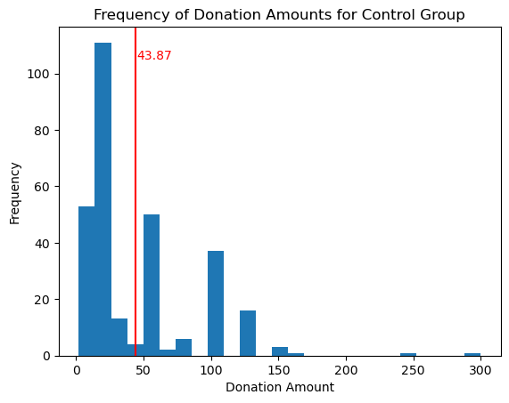
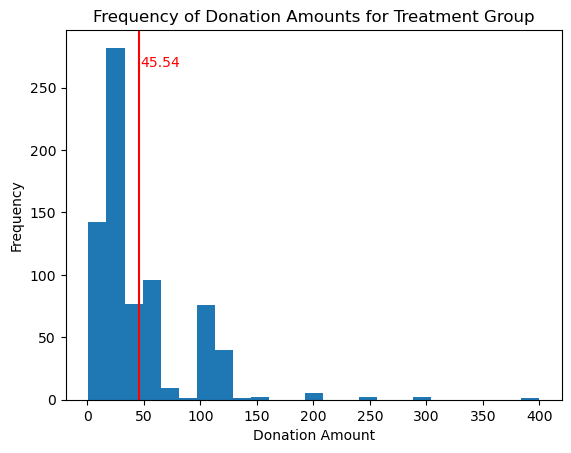
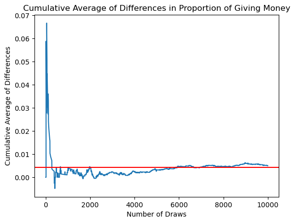

# Linear Regression - mrm2import pyrsm as rsmlr_mrm2 = rsm.regress( data = karlan[['treatment', 'mrm2']], evar ="treatment", rvar ="mrm2" )lr_mrm2.summary()
Linear regression (OLS)
Data : Not provided
Response variable : mrm2
Explanatory variables: treatment
Null hyp.: the effect of x on mrm2 is zero
Alt. hyp.: the effect of x on mrm2 is not zero
coefficient std.error t.value p.value
Intercept 12.998 0.094 138.979 < .001 ***
treatment 0.014 0.115 0.119 0.905
Signif. codes: 0 '***' 0.001 '**' 0.01 '*' 0.05 '.' 0.1 ' ' 1
R-squared: 0.0, Adjusted R-squared: -0.0
F-statistic: 0.014 df(1, 50080), p.value 0.905
Nr obs: 50,082
Linear regression (OLS)
Data : Not provided
Response variable : couple
Explanatory variables: treatment
Null hyp.: the effect of x on couple is zero
Alt. hyp.: the effect of x on couple is not zero
coefficient std.error t.value p.value
Intercept 0.093 0.002 41.124 < .001 ***
treatment -0.002 0.003 -0.584 0.559
Signif. codes: 0 '***' 0.001 '**' 0.01 '*' 0.05 '.' 0.1 ' ' 1
R-squared: 0.0, Adjusted R-squared: -0.0
F-statistic: 0.341 df(1, 48933), p.value 0.559
Nr obs: 48,935
The intercept coefficients calculated for mrm2 and couple variables are exactly the same as in table 1 of the paper for the control group. Also, when incorporating the coefficients for treatment (treatment = 1), they also equal the mean values in table 1 for the treatment group.
For mrm2 (months since last donation), the control group mean was 12.998 and that increases to 13.012 if they were a part of the treatment group. This is not a large disparity and as such did not prove to be statistically significant on a 95% confidence interval.
For couple (whether the donor was a couple), the control group mean was 0.093 (interpreted as 9.3% of donors in the control group were couples) and that decreases to 0.091 if they were a part of the treatment group. This is also not a large disparity and as such did not prove to be statistically significant on a 95% confidence interval.
# find proportion of treatment group that gave moneytreat_gave = karlan[karlan['treatment'] ==1]['gave'].mean()control_gave = karlan[karlan['treatment'] ==0]['gave'].mean()treat_gave, control_gave
(0.02203856749311295, 0.017858212980164198)
# create bar graph for proportion of treatment/control group that gave moneyimport matplotlib.pyplot as pltfig, ax = plt.subplots()ax.bar(['Treatment', 'Control'], [treat_gave, control_gave])ax.set_ylabel('Proportion of Group that Gave Money')ax.set_title('Proportion of Treatment and Control Group that Gave Money')plt.show()
Linear regression (OLS)
Data : Not provided
Response variable : gave
Explanatory variables: treatment
Null hyp.: the effect of x on gave is zero
Alt. hyp.: the effect of x on gave is not zero
coefficient std.error t.value p.value
Intercept 0.018 0.001 16.225 < .001 ***
treatment 0.004 0.001 3.101 0.002 **
Signif. codes: 0 '***' 0.001 '**' 0.01 '*' 0.05 '.' 0.1 ' ' 1
R-squared: 0.0, Adjusted R-squared: 0.0
F-statistic: 9.618 df(1, 50081), p.value 0.002
Nr obs: 50,083
The outcome of our t-test and linear regression were both similar in that it was found at a 95% confidence interval that the treatment did cause an increase in the number of donations. The linear regression did not explain any variance in the data, however that is not as important because we are using what should be a logistic regression (binary outcome of 1 or 0 for if they donated or not) with a linear regression model.
import statsmodels.formula.api as smf
mod = smf.probit('gave ~ treatment', data=karlan)
res = mod.fit()
Optimization terminated successfully.
Current function value: 0.100443
Iterations 7
The above calculations matches what Karlan suggests in his paper, that increasing the match ratio does not increase the probability of making a donation. The above calculations show a 1:1 match ratio when compared to a 2:1 match ratio, and a 2:1 match ratio when compared to a 3:1 match ratio. We did a two-sided t-test, which has a null hypothesis stating that 2:1 is not the same as 1:1, and 3:1 is not the same as 2:1.
#create a variable ratio1 where if ratio column equals 1, then ratio1 equlas 1, else 0karlan['ratio1'] = karlan['ratio'].apply(lambda x: 1if x ==1else0)
# Linear regression for match ratios and treatmentlr_ratio = rsm.regress( data = karlan[['gave', 'ratio1', 'ratio2', 'ratio3']], evar = ['ratio1', 'ratio2', 'ratio3'], rvar ='gave' ) lr_ratio.summary()
Linear regression (OLS)
Data : Not provided
Response variable : gave
Explanatory variables: ratio1, ratio2, ratio3
Null hyp.: the effect of x on gave is zero
Alt. hyp.: the effect of x on gave is not zero
coefficient std.error t.value p.value
Intercept 0.018 0.001 16.225 < .001 ***
ratio1 0.003 0.002 1.661 0.097 .
ratio2 0.005 0.002 2.744 0.006 **
ratio3 0.005 0.002 2.802 0.005 **
Signif. codes: 0 '***' 0.001 '**' 0.01 '*' 0.05 '.' 0.1 ' ' 1
R-squared: 0.0, Adjusted R-squared: 0.0
F-statistic: 3.665 df(3, 50079), p.value 0.012
Nr obs: 50,083
The results of linear regression model on match ratios of 1:1, 2:1, and 3:1 show that all but a ratio of 1:1 are statistically significant. The intercept coefficient (meaning when there is no match) is 0.018, and then for ratio 1:1 it has a coefficient of 0.003, which added to 0.018 is 0.021. For ratio 2:1 and 3:1, they both have coefficients of 0.005, creating a response rate of 0.023 for both. All these response rates match table 2A in the paper.
The precision of these estimates also match what is in the paper for standard error. Each ratio has a standard error of 0.002, meaning that ratio 1:1 could have a varying effect on response rate between 0.001 and 0.005, and ratios 2:1 and 3:1 could vary between 0.003 and 0.007. All however remain positive when incorporating standard error, meaning that the match ratio does have a positive effect on response rate when comparing to control.
The difference in responsive rate between 1:1 and 2:1 match ratios is 0.002, and between 2:1 and 3:1 match ratios is 0. From this, we can conclude that increasing makes a very small difference from 1:1 to 2:1 but no difference between 2:1 and 3:1. Overall, increasing the match donation above 1:1 does not make a large difference in response rate.
Linear regression (OLS)
Data : Not provided
Response variable : amount
Explanatory variables: treatment
Null hyp.: the effect of x on amount is zero
Alt. hyp.: the effect of x on amount is not zero
coefficient std.error t.value p.value
Intercept 0.813 0.067 12.063 < .001 ***
treatment 0.154 0.083 1.861 0.063 .
Signif. codes: 0 '***' 0.001 '**' 0.01 '*' 0.05 '.' 0.1 ' ' 1
R-squared: 0.0, Adjusted R-squared: 0.0
F-statistic: 3.461 df(1, 50081), p.value 0.063
Nr obs: 50,083
From our linear regression model to calculate dollars donated amount from whether the donor was in the treatment or control group, we can conclude that the control group donates $0.813 and being a part of the treatment group increases that amount by $0.154, bringing the estimated dollars donated amount to $0.967. Per a 95% confidence interval, the model is not statistically significant, however it is very close to being so.
Linear regression (OLS)
Data : Not provided
Response variable : amount
Explanatory variables: treatment
Null hyp.: the effect of x on amount is zero
Alt. hyp.: the effect of x on amount is not zero
coefficient std.error t.value p.value
Intercept 45.540 2.423 18.792 < .001 ***
treatment -1.668 2.872 -0.581 0.561
Signif. codes: 0 '***' 0.001 '**' 0.01 '*' 0.05 '.' 0.1 ' ' 1
R-squared: 0.0, Adjusted R-squared: -0.001
F-statistic: 0.337 df(1, 1032), p.value 0.561
Nr obs: 1,034
After filtering the data to only include those who donated, the linear regression model changed significantly. The intercept coefficient is now $45.54, and the treatment coefficient is now negative $1.67. Now, the treatment group has a negative affect on amount donated, meaning that the control group donates $45.54 and the treatment group donates $43.87.
However, the model is not statistically significant at 95% confidence interval.
# create a histogram for all the donation amounts above 0 for the control group# have bin intervals be 25fig, ax = plt.subplots()ax.hist(karlan[(karlan['amount'] >0) & (karlan['treatment'] ==0)]['amount'], bins=25)ax.axvline(43.87, color='red')ax.text(43.87+1, ax.get_ylim()[1] *0.9, f'{43.87}', color='red')ax.set_ylabel('Frequency')ax.set_xlabel('Donation Amount')ax.set_title('Frequency of Donation Amounts for Control Group')plt.show()

fig, ax = plt.subplots()ax.hist(karlan[(karlan['amount'] >0) & (karlan['treatment'] ==1)]['amount'], bins=25)ax.axvline(45.54, color='red')ax.text(45.54+1, ax.get_ylim()[1] *0.9, f'{45.54}', color='red')ax.set_ylabel('Frequency')ax.set_xlabel('Donation Amount')ax.set_title('Frequency of Donation Amounts for Treatment Group')plt.show()# add a line to the histogram at 43.87 and display the number 43.87

# simulate 10,000 draws from the control distribution and 10,000 draws from the treatment distribution. You'll then calculate a vector of 10,000 differences, and then you'll plot the cumulative average of that vector of differences. Comment on whether the cumulative average approaches the true difference in means.import numpy as npfrom scipy.stats import bernoullicontrol = karlan[karlan['treatment'] ==0]['gave'].mean()treatment = karlan[karlan['treatment'] ==1]['gave'].mean()print(control, treatment)
# calculate cumulative average of the differences for the first 10,000 drawscum_avg = np.cumsum(treatment_sim - control_sim) / np.arange(1, 10001)cum_avg
# plot the cumulative average of the differences with a line plotfig, ax = plt.subplots()ax.plot(cum_avg)ax.axhline(treatment - control, color='red')ax.set_ylabel('Cumulative Average of Differences')ax.set_xlabel('Number of Draws')ax.set_title('Cumulative Average of Differences in Proportion of Giving Money')plt.show()

The above graph shows a simulation of the differences between simulated probabilities of an individual actually donating in the treatment group and an individual donating in the control group. The control group was given a probability of 0.018 and treatment group was given a probability of 0.022, which were both calculating from the given dataset.
We simulated this for the control and treatment group 10,000 times to generate the graph. The red horizontal line on the graph shows the calculated difference between the treatment and control probabilities from the dataset (0.004).
As shown, the cumulative difference between the treatment and control group varies greatly initially, then slowly starts to vary less and less around the average difference of 0.004. With more trials, it is expected there would be even less variability and the cumulative difference would be extremely close to 0.004.
# make a histogram of n_50 so there is no spacing between the barsfig, ax = plt.subplots()ax.hist(n_50, bins=10, rwidth=1)ax.axvline(n_50.mean(), color='red')ax.text(n_50.mean(), ax.get_ylim()[1], f'{np.round(n_50.mean(),4)}', color='red', verticalalignment='center', horizontalalignment='center')ax.set_ylabel('Frequency')ax.set_xlabel('Difference in Proportion of Donors (Treatment - Control) in 50 Draws')ax.set_title('Frequency of Proportion of Control Group that Gave Money in 50 Draws')plt.show()
fig, ax = plt.subplots()ax.hist(n_200, bins=10, rwidth=1)ax.axvline(n_200_mean, color='red')ax.text(n_200_mean, ax.get_ylim()[1], f'{np.round(n_200_mean,4)}', color='red', verticalalignment='center', horizontalalignment='center')ax.set_ylabel('Frequency')ax.set_xlabel('Difference in Proportion of Donors (Treatment - Control) in 200 Draws')ax.set_title('Frequency of Proportion of Control Group that Gave Money in 200 Draws')plt.show()
fig, ax = plt.subplots()ax.hist(n_500, bins=10, rwidth=1)ax.axvline(n_500_mean, color='red')ax.text(n_500_mean, ax.get_ylim()[1], f'{np.round(n_500_mean,4)}', color='red', verticalalignment='center', horizontalalignment='center')ax.set_ylabel('Frequency')ax.set_xlabel('Difference in Proportion of Donors (Treatment - Control) in 500 Draws')ax.set_title('Frequency of Proportion of Control Group that Gave Money in 500 Draws')plt.show()
fig, ax = plt.subplots()ax.hist(n_1000, bins=10, rwidth=1)ax.axvline(n_1000_mean, color='red')ax.text(n_1000_mean, ax.get_ylim()[1]*0.9, f'{np.round(n_1000_mean,4)}', color='red', verticalalignment='center', horizontalalignment='right')ax.set_ylabel('Frequency')ax.set_xlabel('Difference in Proportion of Donors (Treatment - Control) in 500 Draws')ax.set_title('Frequency of Proportion of Control Group that Gave Money in 500 Draws')plt.show()